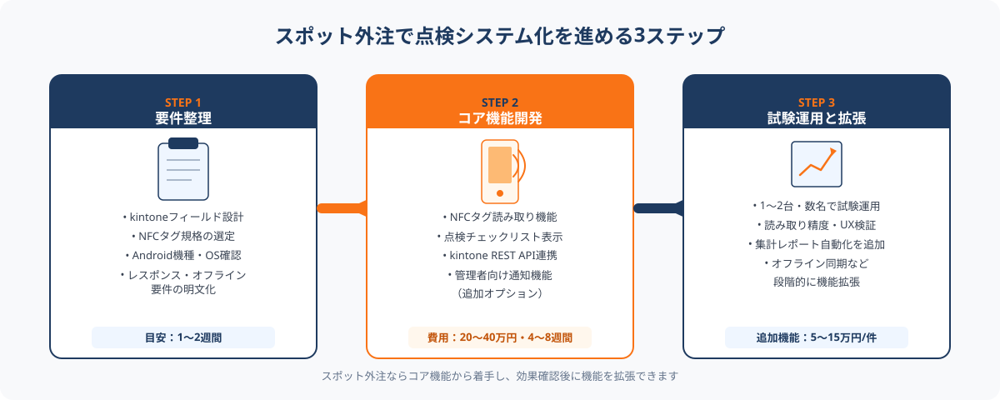

運送業の点検業務で起きている3つの課題
道路運送車両法・貨物自動車運送事業輸送安全規則により、運送事業者は乗務員に日常点検（運行前点検）を義務付けています。しかし多くの中小運送事業者では、この点検業務が紙の点検表＋手書き記録のまま運用されており、現場・管理部門双方に非効率が積み重なっています。
課題① 記録漏れ・不正記入のリスク
紙の点検表は「後でまとめて記入する」「空欄のまま提出される」といった不正記入が起きやすく、監査・事故調査の際に記録の信憑性が問われます。特に繁忙期の早朝は点検作業と書類記入が流れ作業になりがちです。
課題② 管理者の集計・確認工数
運行管理者は提出された紙の点検表を目視確認し、異常がないかチェックするとともに月次で集計表を作成する必要があります。車両台数が20〜50台規模の営業所では、この確認・集計作業だけで月20〜40時間を費やすケースがあります。
課題③ 異常記録の早期発見が難しい
紙運用では「先月から同じ車両のブレーキ液面で異常が繰り返し記録されていた」といった傾向分析がほぼ不可能です。デジタル化によってはじめて、車両ごとの点検履歴・異常頻度の可視化と早期整備対応が実現します。
これらを一気に解決するのが、「NFC認証×kintone連携Androidアプリ」のスポット外注開発です。
NFC×kintone連携アプリで何が変わるか

NFCタグ（ICタグ）を各車両のダッシュボードや乗降ステップ付近に貼り付け、乗務員がAndroidタブレットでかざすと点検チェックリストが自動的に表示されます。チェック完了後は即時kintoneに記録され、管理者のPC・スマートフォンにリアルタイム通知が届きます。
導入後に変わること（主なポイント）
① 点検記録の確実性が向上する
NFCタグを実際にかざした時刻・タブレットのGPS情報が自動付記されるため、「書いた/書かない」の曖昧さがなくなります。チェック漏れ項目があると送信できない設計にすることで、記録漏れ自体を物理的に防ぐことが可能です。
② 管理者の確認・集計が自動化される
kintoneの一覧画面・レポート機能で当日の全車両の点検状況をダッシュボード表示できます。「異常あり」の項目があった場合は管理者へ自動メール・Slack通知が飛ぶ仕組みも追加できます。月次集計・CSV出力も自動化されるため、紙の集計作業がゼロになります。
③ 車両ごとの点検履歴を分析できる
kintoneに蓄積された点検データをグラフ化することで、「この車両は過去3ヶ月でタイヤ空気圧の異常が5回記録されている」といった傾向を可視化できます。整備の優先順位付けと予防整備コストの最適化に直結します。
大手業務システムベンダーへの依頼では、要件定義から開始して全工程で200万円超になるケースが少なくありません。スポット外注では「NFC読み取り→kintone登録」というコア機能に絞って20〜40万円台から着手し、効果確認後に通知機能・分析ダッシュボードを追加依頼するという段階的アプローチが取れます。kintoneカスタマイズ経験者のエンジニアをスポットで呼び込めるのも大きな強みです。
スポット外注でシステム化を進める3ステップ

STEP 1：現行の点検フローと技術環境を整理する（1〜2週間）
まず「現在の点検表の項目数・書式」「使用中のAndroidタブレットの機種・OSバージョン」「kintoneアカウントの有無（未導入ならこのタイミングで契約）」「車両台数と営業所数」を一覧にまとめます。
NFCタグの規格選定もこの段階で行います。車両環境（金属面に貼る場合はNFCシート対応タグが必要）や、複数のNFC規格（Felica、Type-A/B、Type-F）への対応要件を確認しておくと、エンジニアへの発注精度が大幅に上がります。
点検チェックリストの項目（エンジン・ブレーキ・タイヤ・灯火類など）と、「異常あり」の場合の対応フロー（整備担当者への通知・運行可否の判断権限者）も文書化しておきましょう。
STEP 2：スポット外注でコア機能を開発する（4〜8週間）
STEP1の整理結果をもとに、ANKENなどのスポット外注プラットフォームでkintoneカスタマイズ×Androidアプリ開発の経験を持つエンジニアを探して依頼します。
初回発注のスコープは「NFCタグ読み取り→点検チェックリスト表示→kintone登録」の基本フローに絞ることを推奨します。費用目安は20〜40万円、工期は4〜8週間が典型的です。
発注時に伝えるべき技術情報として、①kintoneのアプリID・フィールド構成、②使用タブレットのAndroidバージョン（NFCの動作確認済み機種が望ましい）、③NFCタグの規格・数量、④レスポンス要件（タグ読み取りから画面表示まで何秒以内か）を明示してください。これらが揃っていると見積もり精度が上がり、手戻りが減ります。
STEP 3：試験運用と段階的な機能拡張（導入後1〜3か月）
完成したアプリを1〜2台の車両・数名の乗務員で試験運用し、「読み取り精度」「通信エラーの頻度」「操作しやすさ」を現場で検証します。改善点はスポット外注で追加依頼（1〜5万円/件程度の小規模修正）として対応できます。
試験運用の結果が良好であれば、「管理者向け異常通知メール」「月次集計の自動レポート送信」「整備履歴との連携」といった追加機能を次のスポット依頼として段階的に発注していきます。初期投資を最小化しながら、業務に合わせてシステムを育てていける点がスポット外注の最大の強みです。
ANKENでは、kintoneカスタマイズ・Androidアプリ開発・NFC連携の経験を持つエンジニアをスポット単位でご紹介しています。「どの機能から着手すべきか」「現状の環境で実現できるか」という段階からご相談いただけます。初回相談は無料です。
👉 無料で相談する（点検システム化をスポット外注で依頼する）kintone・NFC・Androidアプリ開発の技術要件についても、ヒアリングした上でご提案します。
発注前に整理しておくべき技術要件
スポット外注でスムーズに開発を進めるために、発注前に確認・準備しておくと効果的な技術情報を整理します。
kintone環境の確認
kintoneを未導入の場合、月額780円〜（ライトコース）から契約できます。点検記録用のkintoneアプリを事前に作成し、フィールド（日付・車両番号・各点検項目・異常内容・乗務員名など）を定義しておくと、エンジニアへの依頼時に「このフィールドにこのデータを登録する」と具体的に伝えられます。kintone REST APIを使って外部アプリからレコードを登録する方式が標準です。
NFCタグの選定
車両のダッシュボード付近に貼るNFCタグは金属面の近くに設置する場合が多く、一般的なNFCシール（Type2/NTAG213等）では読み取り不良が起きます。「金属面対応NFCタグ（Anti-metalタグ）」を選定する必要があります。1枚あたり200〜500円、50台分でも1〜2万円程度です。
Android端末のNFC動作確認
AndroidのNFC読み取りはAndroid 4.0以降で標準対応していますが、メーカー・機種によって読み取り精度に差があります。現在営業所で使用しているタブレットのNFC動作確認（設定 → 接続 → NFCのON/OFF）を事前に行い、動作しない場合は機種変更または新規購入を検討してください。
レスポンス要件の明確化
朝の点呼・点検は乗務員が短時間に集中する繁忙タイミングです。「NFCタグ読み取りから点検画面表示まで2秒以内」「kintone登録の確認まで5秒以内」といったレスポンス目標をエンジニアに伝えることで、キャッシュ設計やAPI呼び出しの最適化方針を明確にできます。
オフライン対応の要否
Wi-Fiや4G電波が不安定な車庫・屋外での使用が想定される場合は、「オフライン時はローカルに一時保存し、電波回復後にkintoneへ同期」する設計が必要です。この機能の有無で開発工数が異なるため、発注時に要否を明確にしてください。
よくある質問
- Q. kintoneを使っていなくてもNFC連携アプリは作れますか？
- A. 作れます。kintoneの代わりにGoogleスプレッドシートやFirebase等にデータを登録する構成も選べます。ただしkintoneは管理画面・通知・CSV出力が標準搭載されており、追加開発コストが少ないため運送業での採用事例が多いです。
- Q. 点検システム化にかかる費用と期間の目安を教えてください。
- A. コア機能（NFC読み取り→kintone登録）のスポット外注開発は20〜40万円、工期4〜8週間が目安です。通知機能や集計ダッシュボードは追加で5〜15万円程度です。
- Q. 紙の点検表を廃止すると法令的に問題はありませんか？
- A. 電子記録は道路運送車両法の日常点検記録として認められています。ただし記録の改ざん防止・保存期間（1年以上）の担保が必要です。スポット外注開発時にタイムスタンプ付与・ユーザー認証を組み込むことで法令要件を満たせます。
まとめ
運送業の車両運行前点検は法令義務ですが、紙運用のままでは記録漏れ・管理工数・傾向分析不可という3重の課題が残り続けます。NFC×kintone連携Androidアプリをスポット外注で開発することで、これらを一括して解決できます。
成功のポイントは3つです。①発注前にkintoneフィールド設計・NFCタグ規格・Android機種の動作確認を済ませる、②初回はコア機能（NFC読み取り→kintone登録）だけに絞って20〜40万円台から着手する、③試験運用後に通知・集計・オフライン対応を段階的に追加依頼する。大規模投資なしで点検業務のデジタル化を一歩ずつ進め、法令遵守と現場の業務効率化を同時に実現してください。